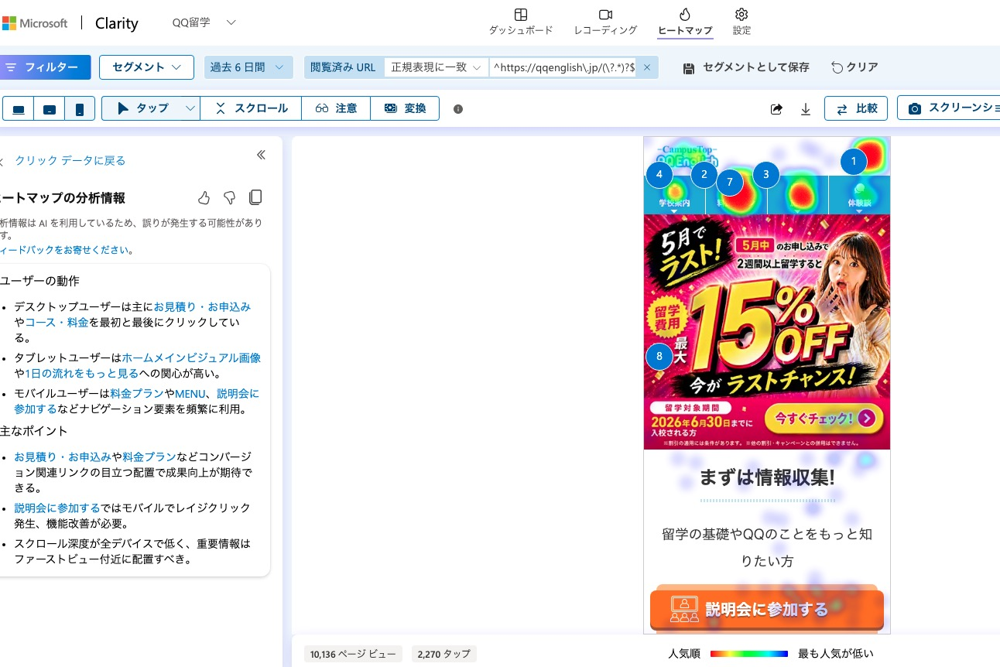

1-1 流入データ（Search Console・過去3ヶ月）
| 指標 | 数値 | コメント |
|---|
| 表示回数（3ヶ月計） | 222,078回 | 認知機会は十分にある |
| クリック数（3ヶ月計） | 4,729件 | 月平均約1,576件 |
| CTR（クリック率） | 2.13% | 改善余地あり |
| 平均掲載順位 | 6.27位 | 1ページ目だが上位ではない |
📱
デバイス比率：モバイルが62.8%を占める。訪問者の約3人に2人がスマートフォンからアクセスしており、FVおよびCTAの設計はモバイル最優先で考える必要があります。
| デバイス | クリック数 | 割合 | CTR |
|---|
| モバイル | 2,616 | 62.8% | 2.18% |
| PC | 1,444 | 34.7% | 1.92% |
| タブレット | 67 | 1.6% | 1.43% |
流入キーワードの性質分類
| 分類 | 代表クエリ | クリック数 | CTR | 特徴 |
|---|
| 指名検索 | qqenglish | 956 | 2.06% | QQを知っているユーザー。CTRが低いのはオンライン英会話サービスとの混在が原因 |
| 比較検討層 | セブ島留学 / フィリピン留学 | 188〜51 | 3.2% | まだQQを知らない・比較中の新規ユーザー。CVポテンシャルが高い |
| 情報収集層 | セブ島 英語 / フィリピン 語学留学 | 〜41 | 1〜2% | 検討初期。中長期的な育成対象 |
1-2 ユーザー行動データ（Microsoft Clarity）
クリックヒートマップ（モバイル・直近6日間）

▲ Clarityヒートマップ（モバイル・過去6日間）。ヘッダーナビに集中しており、CTAへの到達が低い状態が確認できる。
📌 【画像を挿入してください】
Clarityヒートマップ全体スクリーンショット
ファイル名：_2026-05-07_13_55_50.jpg
| 順位 | 要素 | クリック数 | 割合 | 備考 |
|---|
| 1位 | MENU（ハンバーガー） | 133 | 5.86% | ナビゲーション探索が多い |
| 2位 | 料金プラン | 125 | 5.51% | 費用への関心が高い |
| 11位 | 「説明会に参加する」（FVエリア） | 39 | 1.72% | 主要CTAの一つ |
| 21位 | 「お見積り・お申込み」（ヘッダー） | 27 | 1.19% | 購買意欲が高い層が直接探している |
⚠️
ナビゲーション依存が高い。MENU・料金プラン・施設など、ナビ系クリックが上位を占めています。FVを見ても「次にどこへ行けばいいかわからない」ユーザーが多いことを示しています。
1-3 スクロール深度 ＆ アテンション分析（Clarity・4/23〜5/7）
対象：1,405PV（完全一致 https://qqenglish.jp/）
🚨
100人来て、ページの半分まで読むのはたった17人。スクロール5%の時点で37%が離脱しており、ページ中盤の比較表・シミュレーションなどの重要コンテンツはほとんど読まれていない状態です。
| 深度 | 平均滞在時間 | 読み取れること |
|---|
| 5%（FV付近） | 6分6秒 | ⚠️ 迷っているサイン。CTAが見つからず/押す理由がない状態 |
| 15〜44%（中盤） | 約1〜12秒 | ほぼ素通り。比較表・シミュレーションが読まれていない |
| 60% | 29秒 | 「選ばれる理由」セクション付近でやや関心あり |
| 100%（フッター） | 12分29秒 | ⚠️ フッターで次の行き先を探している。ナビ設計に課題あり |